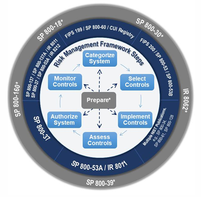
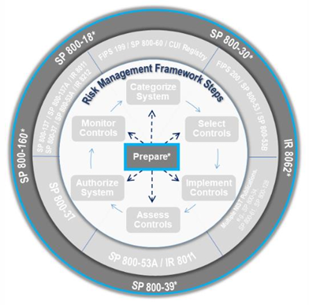
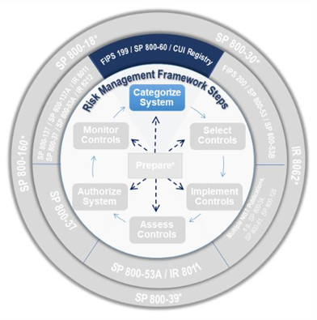
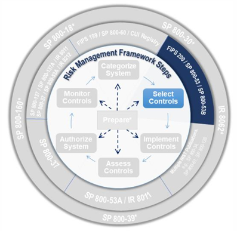
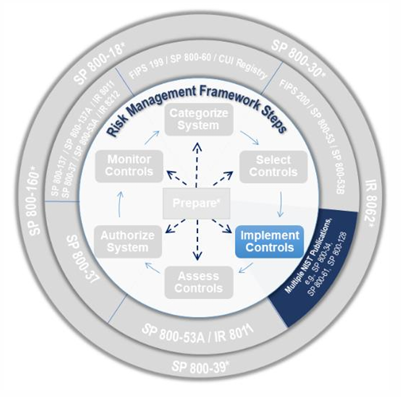
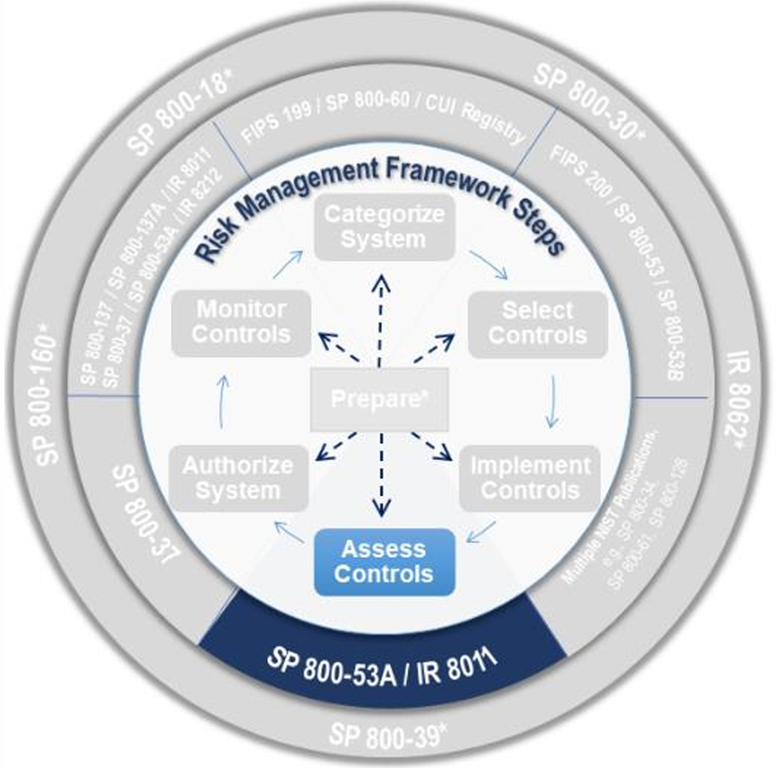
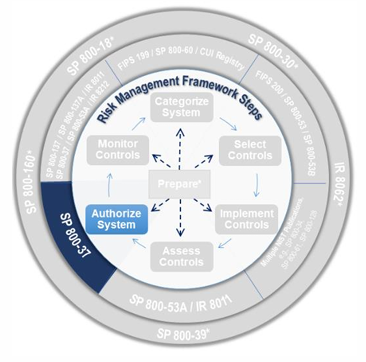
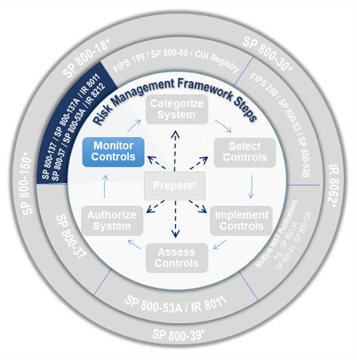

خطوات ومهام إطار إدارة المخاطر
RMF Steps & Tasks
التحليل التفصيلي والعملي للمهام السبعة وعناصر التحقق | NIST RMF
المحاضرة الثامنة: تفصيل مهام التحضير، التصنيف، الاختيار، التنفيذ، التقييم، الترخيص، والمراقبة
أستاذ المادة: د. علي حيدر شمسان (Dr. Ali Haider Shamsan)
ترجمة وتصميم: م. أسامة الاكحلي (Eng. Osama Al-Akhaly)
كلية الهندسة والحاسبات - جامعة العلوم والتكنولوجيا - اليمن
مخطط المحاضرة الثامنة (Outlines)
شرح عام لأهمية وفوائد تفعيل خطوات الـ RMF ودور الأدوات المؤتمتة في تبسيط العمليات.
استعراض تفصيلي للمهام المرتبطة بكل خطوة من خطوات الإطار والمنشورات المساندة لها.
قوائم مهام التحضير (Prepare) والخطوات الست اللاحقة على مستوى المنشأة والنظام.
إطار إدارة المخاطر والأدوات المؤتمتة
- توجيه وبناء الممارسات الآمنة: تم تصميم إطار الـ RMF لإرشاد المنشآت وتوجيهها في بناء وتطوير أفضل ممارسات حماية وتأمين أصول البيانات والأنظمة السيبرانية.
- استخدام وتفعيل الأدوات المؤتمتة: يُنصح بشدة ويجوز للمنظمات الاستعانة بالأدوات والبرمجيات المؤتمتة (Automated Tools) لمساعدتها وتبسيط عمليات تطبيق خطوات الـ RMF.
- تُعد هذه الأدوات بالغة النفع والفائدة في **تنظيم وتسهيل الجهود ومكاملة معلومات الرقابة اللحظية** المستمدة من أدوات المراقبة والمصادر التقنية الأخرى بالمنشأة.
- يرتكز نجاح وفائدة هذه الأدوات بصفة حاسمة على دقة وجودة وصحة البيانات والمدخلات الفنية وطرق استخدامها وتحليلها أمنياً.
- يجب تثبيت وإعداد وتكوين الأدوات المؤتمتة بشكل آمن وصحيح، وتوفير الصيانة الدورية لها لضمان سلامتها ودقة تقاريرها.
الفوائد والخصائص العامة لإطار إدارة المخاطر
يوفر تطبيق إطار الـ RMF حزمة من المزايا والفوائد الاستراتيجية والتشغيلية للمنظمات، ومن أهمها:
توفير عملية هيكلية ومنظمة ومرنة لإدارة مخاطر حماية المعلومات والخصوصية المصاحبة لتشغيل واستخدام الأنظمة. تقديم إرشادات دقيقة لتحديد مستويات وحلول الاستجابة المطلوبة لتأمين وحماية العمليات والخدمات والمرافق بالمنشأة.
منهجية قابلة للتكرار تحقق التوازن بين أهداف وصالح المنظمة العليا ومتطلبات وسياسات الأمن والخصوصية. تطبيق إجراءات الرقابة المستمرة لتحقيق التحسن والتطوير الدائم والوضعية الأمنية والوقائية للأصول.
منهجية محايدة تكنولوجياً وصالحة للتطبيق على أي نوع أو تصنيف للأنظمة دون تعديل فني لصلب وخطوات الإطار. تتباين وتختلف تفاصيل الضوابط المحددة وإجراءات وطرق تقييمها باختلاف فئات الأنظمة (مثل أنظمة إنترنت الأشياء IoT أو أنظمة التحكم الصناعية والرقابة والمصانع OT) دون الحاجة لتغيير خطوات الـ RMF.
مفهوم وهيكلية إطار إدارة المخاطر (RMF)
تتكامل خطوات الـ RMF السبع مع مجموعة من المنشورات والمعايير الفنية والوقائية الصادرة من معهد NIST لتأمين الأصول:

خطوات الـ RMF السبع وتفاصيل مرونة التنفيذ
- يتكون إطار الـ RMF من خطوة تحضيرية وتمهيدية (Prepare Step) تليها ست خطوات أساسية وجوهرية لتأمين وحماية الأصول.
- يتم عرض وسرد خطوات الـ RMF بصفة متتالية وتراكمية، ولكن يجوز تنفيذ وتشغيل الخطوات اللاحقة لخطوة التحضير بصفة **غير متتالية أو متداخلة** حسب المتطلبات والظروف الأمنية للمنظمة.
- يُتوقع ويُطلب من المنظمات **تنفيذ وتلبية كافة خطوات ومهام إطار الـ RMF بصرامة** ودون إغفال أي جزئية.
- تمتلك المنظمات مرونة هائلة وصلاحيات واسعة لكيفية تنفيذ خطوات ومهام الإطار، شريطة الالتزام التام بالوفاء بالقوانين والتشريعات وإدارة المخاطر بكفاءة.
خطوة التحضير والتجهيز - الأهداف والغايات (Prepare)
تهدف خطوة التحضير لتهيئة وتجهيز المنظمة والنظام لتطبيق وإدارة الـ RMF بفاعلية:

مهام التحضير على مستوى المنشأة وقطاعات الأعمال
تشتمل الأنشطة المعتمدة في خطوة التحضير (Prepare) على مستوى المنظمة الاستراتيجي والقطاعات على المهام التالية:
تحديد وتعيين وتكليف المسؤولين والكوادر والفرق بالأدوار والمسؤوليات المحددة لإدارة مخاطر الأمن والخصوصية.
تأسيس واعتماد استراتيجية موحدة لإدارة مخاطر المنظمة تشتمل على تحديد حدود قبول المخاطر والمصفوفة الحاكمة.
إجراء تقييم شامل لمخاطر الأمن والخصوصية على مستوى المنشأة وتحديث التقارير باستمرار وبانتظام.
تأسيس واعتماد ونشر ضوابط التكوين الأمنية وعناصر التحكم القياسية ومطابقتها مع تطلعات وسياسات المنشأة (اختياري).
تحديد وتوصيف واعتماد ونشر عناصر التحكم والضوابط المشتركة بالمنشأة وتجهيزها وموثوقيتها للتوريث من الأنظمة.
ترتيب وتحديد أولويات الأنظمة المندرجة تحت نفس تصنيف الأثر والضرر لتوجيه وحفظ الموارد والميزانيات (اختياري).
تطوير وتطبيق استراتيجية موحدة وشاملة للمنظمة بالكامل للرقابة والمراقبة المستمرة لتقييم مدى فاعلية أداء الضوابط الأمنية المطبقة بصفة دائمة.
مهام التحضير والتجهيز على مستوى النظام (Prepare Tasks)
تشتمل الأنشطة المعتمدة في خطوة التحضير على مستوى الأنظمة الفردية والتشغيلية على المهام التالية:
تحديد وفهم محركات ومهام وأهداف قطاعات الأعمال والأنشطة والخدمات الحيوية المباشرة التي يدعمها ويؤمنها النظام.
تحديد وحصر كافة أصحاب المصلحة والشركاء والجهات الذين يملكون اهتماماً بتطوير أو تشغيل أو صيانة أو إيقاف النظام.
حصر وتحديد وتعريف كافة الأصول (العتادية والبرمجية والبشرية والمعلوماتية) التي تتطلب الحماية والتأمين بالنظام.
رسم وتحديد حدود الترخيص الأمني للأنظمة بدقة وتحديد مساحات المسؤوليات وتداخل الشبكات وتدفقات البيانات.
تحديد وتعريف كافة فئات وأنواع وتصنيفات البيانات المخطط تداولها أو حفظها أو نقلها ضمن محيط تشغيل النظام.
فهم وتحديد وتوصيف كافة مراحل دورة حياة تداول البيانات (من الجمع والمعالجة وحتى الحذف الآمن) لكل فئة من الفئات.
القيام بعملية فحص وتقييم مخاطر الأمن والخصوصية المحدقة بالنظام وتحديث التقارير والنتائج بصفة مستمرة ودائمة.
تحديد وصياغة متطلبات الأمن والخصوصية والوقاية والتشريعات المفروضة على النظام والبيئة التشغيلية له.
تحديد ومواءمة موضع وتوافق النظام الجديد وصلاحياته وعلاقته مع هندسة ومعمارية المؤسسة الأمنية والتقنية بالكامل.
توزيع وتخصيص متطلبات الأمن والخصوصية لعناصر النظام الفردية والبيئة ومكاملتها بالحلول التقنية، يليه **تسجيل وتوثيق النظام بصفة رسمية** لدى المكاتب الإدارية والبرمجية المختصة بالمنظمة لبدء المراقبة والتحقق.
المنشورات والمعايير الداعمة لخطوة التحضير والتجهيز
توفر الهيئة الفنية لمعهد NIST حزمة من المراجع والأدلة التخصصية الداعمة لمهام خطوة التحضير بالمنشآت:
- NIST SP 800-30: دليل إرشادي مخصص لإجراء ممارسات تقييم وفحص المخاطر.
- NIST SP 800-39: دليل إدارة مخاطر أمن المعلومات على مستوى المنشأة بالكامل.
- NIST SP 800-53B: ضوابط التكوين ومستويات ومعايير صقل الضوابط الأمنية.
- NIST SP 800-60 (Vol 1 & 2): دليل مواءمة وتصنيف فئات المعلومات والأنظمة أمنياً.
- NIST SP 800-160 (Vol 1): دليل هندسة معمارية الأنظمة الموثوقة والآمنة سيبرانياً.
- NIST SP 800-161: ممارسات وإجراءات إدارة مخاطر سلاسل الإمداد وتأمين التوريد.
- NIST IR 8062: مقدمة في هندسة الخصوصية وإدارة مخاطر تداول البيانات والمعلومات بالمنشآت الفيدرالية.
- NIST IR 8179: مصفوفة ونموذج عمليات التحليل والتصنيف الهام لترتيب وتحديد أولويات حماية الأصول والأنظمة والشبكات الحيوية.
الخطوة الأولى: التصنيف والتعريف (Categorize - Purpose)
توجيه وحوكمة ممارسات الأمن والخصوصية بالمنظمة عبر التحليل والتقييم والتوثيق الدقيق لمستويات الأثر الناتج عن فقدان الخصائص الأمنية:

مهام خطوة التصنيف والتعريف للأنظمة والبيانات
تشتمل المهام المعتمدة في الخطوة الأولى للـ RMF على الإجراءات والممارسات التالية:
التوثيق الكامل والدقيق لخصائص، مهام، وبنيات النظام محل الدراسة والشبكات وتدفقات البيانات والحدود الفنية والتشغيلية المحيطة به بالكامل في التقارير المعتمدة بالمنظمة.
إجراء التقييم الأمني وتحديد مستويات الأثر والضرر (منخفض، متوسط، مرتفع) المترتب على فقدان السرية والسلامة والتوافر للأصول والبيانات وتوثيق مصفوفة النتائج أمنياً.
المنشورات والمعايير الفنية الداعمة لخطوة التصنيف
توفر المعايير الصادرة عن الهيئات الفنية الأدلة والسياسات اللازمة لتنفيذ وتدقيق ممارسات تصنيف الأصول بالمنشآت:
- FIPS 199: المعايير الفيدرالية المعتمدة لتصنيف مستويات الأمن وحماية معلومات الأنظمة والبيانات بالمنشآت أمنياً وصياغة مصفوفة مستويات الأثر والضرر الفنية.
- NIST SP 800-60 (Vol 1 & 2): أدلة مواءمة وتحديد وتصنيف فئات وأنواع معلومات وبيانات الفئات والأنظمة لربطها بضوابط الأمان.
- NIST SP 800-18: دليل إرشادي وتفصيلي متكامل وموصى به لصياغة وإعداد الخطط والسياسات الأمنية لحماية وتأمين أنظمة معلومات المنظمات.
الخطوة الثانية: الاختيار والتحديد (Select - Purpose)
تحديد وتعديل وتوثيق الضوابط وعناصر التحكم والحلول الأمنية المعتمدة واللازمة لتأمين الأصول وحمايتها من التهديدات السيبرانية النشطة:

مهام خطوة اختيار وتفصيل الضوابط الأمنية للأنظمة
تشتمل مهام الخطوة الثانية للـ RMF على الإجراءات والممارسات الفنية والإدارية التالية:
تحديد واختيار مصفوفة عناصر الضوابط التأسيسية لحماية النظام وبيئة التشغيل بالمنظمة لتقليص المخاطر.
تعديل وصقل وتفصيل وتكييف الضوابط الأمنية المختارة بما يتوافق مع طبيعة وتحديات تشغيل الأجهزة (مهمة مستحدثة).
توزيع وتخصيص الضوابط وعناصر التحكم للأنظمة والكيانات الفرعية وتحديد مسؤولية تفعيلها وتشغيلها (مهمة محدثة).
صياغة وتدوين وتوثيق تفاصيل وخطط تفعيل الضوابط وعناصر التحكم في الخطط والسياسات الأمنية (مهمة مستحدثة).
تطوير وتطبيق استراتيجية ونموذج المراقبة المستمرة للنظام ومكاملتها مع استراتيجية المنظمة الشاملة (مهمة محدثة).
المراجعة والتدقيق الإداري والفني واعتماد الخطط والسياسات الأمنية للخصوصية والأمن والترخيص النهائي للنظام.
المنشورات والمعايير الفنية الداعمة لخطوة الاختيار والتحديد
توفر المعايير المعتمدة حزمة السياسات والضوابط الفنية والأدلة الاسترشادية اللازمة لتسهيل عمليات الاختيار والصقل للضوابط بالمنشأة:
- FIPS 200: المتطلبات والسياسات الأمنية الدنيا المعتمدة لحماية وتأمين أنظمة معلومات المنظمات وتحديد فئات الضوابط وعناصر التحكم.
- NIST SP 800-53: الدليل الشامل وحزمة الضوابط وعناصر التحكم والخصوصية الموصى بها لحماية وتأمين أنظمة معلومات المنظمات.
- NIST SP 800-53B: ضوابط التكوين وأدلة صقل ومواءمة وتعديل الضوابط الأمنية لخطوط الحماية الأساسية.
الخطوة الثالثة: التنفيذ والتشغيل (Implement - Purpose)
التطبيق الفعلي والعملي ومكاملة الحلول الفنية والوقائية المعتمدة والمدونة بالخطط الأمنية بصلب وهيكل وبيئة تشغيل الأنظمة:

مهام خطوة تنفيذ وتشغيل الضوابط الأمنية للأنظمة
تشتمل مهام الخطوة الثالثة للـ RMF على الإجراءات والممارسات الفنية والتوثيقية التالية:
التنفيذ والتشغيل للضوابط الأمنية وعناصر التحكم والحلول الدفاعية المعتمدة بالخطط، ومكاملتها بالبنية الهندسية للأنظمة والشبكات بشكل يضمن الدفاع والوقاية الفعالة للبيانات والأصول.
صياغة وتعديل وتوثيق السجلات التقنية لوصف وتحديد آليات وتفاصيل الإعدادات الفنية والتكوين وعناصر التحكم المطبقة للأنظمة بصفة مستمرة تماشياً مع الواقع الفعلي (مهمة محدثة).
المنشورات والمعايير الفنية الداعمة لخطوة التنفيذ والتشغيل
توفر الأدلة والمنشورات الصادرة حزمة الإجراءات التخصصية والسياسات اللازمة لتأمين وصيانة وحفظ الضوابط المطبقة بالمنشأة:
- NIST SP 800-128: دليل إرشادي فني لإدارة وصيانة وحفظ التكوين الآمن والرقابة المستمرة على إعدادات أجهزة وأنظمة المعلومات بالمنشآت.
- NIST SP 800-34: دليل التخطيط لبرامج الطوارئ والحلول الوقائية واستمرارية الأعمال للأنظمة والخدمات بالمنظمات الفيدرالية.
- NIST SP 800-61: الدليل الإرشادي المعتمد لتنفيذ وصياغة وإدارة ممارسات الاستجابة الفورية لحوادث واختراقات الأمن السيبراني.
- NIST SP 800-86: دليل مكاملة وتطبيق تقنيات وأدوات الأدلة الجنائية الرقمية (Forensics) بصلب ممارسات الاستجابة للحوادث بالمنشأة.
الخطوة الرابعة: التقييم والفحص للضوابط المطبقة (Assess)
التحقق والتدقيق والتقييم الفني المستمر لكفاءة وصحة وسلامة عمل كافة الضوابط وعناصر التحكم لضمان تحقيق غايات الأمان والخصوصية:

مهام خطوة تقييم وفحص الضوابط الأمنية للأنظمة
تشتمل مهام الخطوة الرابعة للـ RMF على الإجراءات والممارسات الفنية والتقييمية التالية:
تحديد واختيار وتكليف فريق أو جهة الفحص والتدقيق المستقلة والمخوّلة بتقييم كفاءة وصحة عمل الضوابط (مهمة مستحدثة).
بناء وتطوير ومراجعة واعتماد خطط الفحص والتقييم الممنهج وتحديد أساليب وأدوات فحص وتدقيق الضوابط الأمنية بالمنشأة.
القيام بالعمليات والممارسات الميدانية وفحص الضوابط وعناصر التحكم بالكامل وفق الطرق والأدوات المعتمدة بالخطة (مهمة منقولة).
إعداد وصياغة ونشر التقارير الفنية المتكاملة التي توضح نتائج الفحص وتحدد العيوب وتوفر التوصيات لمعالجة الثغرات.
التنفيذ الفوري لعمليات الإصلاح والمعالجة الأولية للثغرات المكتشفة، وإعادة فحص وتدقيق الضوابط المعالجة للتأكد من سلامتها.
إعداد خطة العمل والجدول الزمني لمعالجة الثغرات (POA&M) بناءً على مخرجات وتوصيات تقارير الفحص الفنية (مهمة منقولة).
المنشورات والمعايير الفنية لخطوة تقييم وفحص الضوابط
توفر الأدلة الصادرة حزمة المعايير والسياسات والأدوات الداعمة لمهام التدقيق والتقييم بالمنشأة:
- NIST SP 800-53A: الدليل التفصيلي الموصى به لتقييم وفحص كفاءة عمل ضوابط الأمان والخصوصية بالمنشآت وتصميم الخطط الفنية والتدقيقية للتحقق.
- NIST IR 8011: الدعم المؤتمت والتقني للمراقبة والتقييم المستمر للضوابط الأمنية (إصدارات متعددة لخدمة أدوات الأتمتة بالمنشآت).

الخطوة الخامسة: الترخيص والاعتماد الأمني للأنظمة (Authorize)
اتخاذ قرارات السماح بتشغيل واستخدام الأنظمة والخدمات والشبكات بناءً على مراجعة دقيقة وتوثيق قبول المخاطر المتبقية:

مهام خطوة الترخيص والاعتماد الأمني للأنظمة
تشتمل مهام الخطوة الخامسة للـ RMF على الإجراءات والممارسات الإدارية والتنظيمية التالية:
تجميع وإعداد وتوثيق وتسليم حزمة ومستندات الترخيص الأمني للأنظمة للمسؤول المخوّل بقرارات التراخيص بالمنظمة.
إجراء عمليات التحليل والدراسة الفنية للمخاطر المتبقية الناتجة عن تشغيل واستخدام الأنظمة الفردية (مهمة محدثة).
تحديد واعتماد وتطبيق خيارات وحلول وقائية إضافية فورية رداً على المخاطر المكتشفة بالتقييم (مهمة مستحدثة).
اتخاذ وإصدار وتوقيع قرار ترخيص التشغيل أو حظر الاستخدام وقبول مستويات المخاطر الحالية للمنظمة (مهمة مستحدثة).
توثيق ونشر وإبلاغ قرارات وتراخيص تشغيل الأنظمة والشبكات، ورصد وحصر القصور والعيوب الأمنية بالضوابط المطبقة والتي تمثل خطورة غير مقبولة بالمنشأة للقيادات العليا وصناع القرار بالمنظمة.
المنشورات والمعايير لخطوة الترخيص والاعتماد
تنبّه الهيئة التوجيهية للـ RMF إلى **عدم وجود منشورات أو أدلة إضافية أو معايير فرعية مستقلة** تابعة لمعهد NIST لخدمة مهام خطوة الترخيص والاعتماد أمنياً؛ حيث يتم الاستناد بصفة كاملة ومباشرة على القوانين، والتشريعات العليا، والسياسات الداخلية لإدارة وحوكمة وقبول المخاطر المعتمدة بالمنظمة.
الخطوة السادسة: المراقبة المستمرة للوضع الأمني (Monitor)
المتابعة الدائمة والرصد اللحظي للوضعية الأمنية والخصوصية للأنظمة والأجهزة والشبكات لدعم اتخاذ القرارات وحماية الأصول:

مهام خطوة المراقبة المستمرة للأنظمة والأجهزة
تشتمل المهام الأربع الأولى المعتمدة في خطوة المراقبة المستمرة (Monitor) على الممارسات والإجراءات التالية:
المراقبة المستمرة والآلية للنظام والبيئة التشغيلية له لرصد وتوثيق وتقييم وتدقيق أي تعديلات أو تحديثات قد تؤثر سلباً على الوضعية الأمنية وصحة عمل الضوابط.
إجراء عمليات فحص وتقييم دورية ومستمرة للضوابط الأمنية وعناصر التحكم المطبقة أو الموروثة من أنظمة أخرى وفق استراتيجية المراقبة المعتمدة بالمنشأة.
اتخاذ وتطبيق خيارات وحلول وقائية واستجابة فورية رداً على المخاطر المكتشفة بنتائج المراقبة والتقييم المستمر وتعديل خطط العمل والجدول الزمني أمنياً.
التعديل والترميم والتوثيق والتحديث المستمر والدائم لكافة مستندات حزمة الترخيص الأمني للأنظمة (مثل الخطط، التقارير، والـ POA&M) بناءً على نتائج المراقبة.
مهام المراقبة المستمرة: التقارير، التراخيص، وإنهاء الخدمة
تشتمل المهام المتبقية المعتمدة في خطوة المراقبة المستمرة على الممارسات والإجراءات التالية:
إعداد وصياغة ونشر وإبلاغ التقارير الفنية الدورية التي توضح الوضعية الأمنية والخصوصية للأنظمة والأجهزة وكفاءة عمل الضوابط للقيادات الإدارية وصناع القرار بالمنظمة بانتظام.
التقييم والمراجعة الإدارية والفنية المستمرة للتقارير الأمنية الصادرة عن ممارسات المراقبة للتحقق من سلامة وصلاحية استمرار قبول المخاطر المتبقية الحالية بالمنشأة والسماح بتشغيل الأنظمة.
تطبيق وإعداد استراتيجية صلبة ومستقرة لإيقاف وتفكيك وإنهاء خدمات الأنظمة والأجهزة والشبكات والوسائط بشكل آمن وسليم يضمن إتلاف البيانات الحساسة وقواعد المعلومات دون تسريب.
المنشورات والمعايير لخطوة المراقبة المستمرة
توفر الهيئات الفنية معايير وسياسات هامة لتنفيذ وتدقيق ممارسات المراقبة للأصول بالمنشأة:
- NIST SP 800-137: الدليل التأسيسي للمراقبة الأمنية المستمرة للمعلومات (ISCM) للأنظمة والشبكات بالمنظمات الفيدرالية بالكامل.
- NIST SP 800-137A: دليل تقييم وتدقيق وفحص برامج المراقبة الأمنية المستمرة للمعلومات (ISCM Programs) وتصميم أدلة التدقيق والتحقق الفنية.
- NIST SP 800-53A: دليل تقييم وفحص فاعلية عمل ضوابط الأمن والخصوصية بالمنشآت.
- NIST IR 8011: الدعم المؤتمت والتقني للمراقبة والتقييم المستمر للضوابط الأمنية (إصدارات متعددة لخدمة أدوات الأتمتة بالمنشآت).
- NIST IR 8212: منهجية وإطار التقييم المستمر لبرامج المراقبة الأمنية وتوافقها مع المعايير الفنية والوقائية المعتمدة بالدولة.
ملخص المحاضرة الثامنة (Summary)
- الفهم والتوجيه الصحيح للمخاطر: إن الاستيعاب الدقيق لمفهوم مخاطر حماية المعلومات والخصوصية وكيفية معالجتها وإدارتها باستخدام إطار الـ RMF يضمن لك القيام بدورك الأمني الفعال والمستمر لحفظ سلامة وموثوقية وجاهزية أنظمة وبنى منشأتك الرقمية بالكامل.
- الـ RMF عملية مستمرة وليس إجراء امتثال مؤقت: لا يُعد إطار إدارة المخاطر بمثابة برنامج امتثال ورقي أو قائمة فحص تُنفذ لمرة واحدة فقط (One and Done) فور الحصول على ترخيص التشغيل (ATO)؛ بل يُمثل نشاطاً وإجراءً مستمراً ودائماً يدعم أهداف وأعمال ومصالح المنظمة بالكامل بصفة مستديمة.
- الاستقلالية والحيادية التكنولوجية: إطار الـ RMF منهجية محايدة تكنولوجياً يمكن تطبيقها بفاعلية على كافة أنواع وتصنيفات الأنظمة والشبكات الرقمية دون تعديل فني لصلب وخطوات الإطار.
أهم النقاط المستخلصة والنتائج النهائية للمحاضرة
- تسهم إدارة مخاطر حماية المعلومات والخصوصية للأنظمة بصفة كاملة وحاسمة في تمكين وتأمين وتطوير العمليات والمهام وأعمال المنشآت والجهات.
- تعتمد ممارسات تقييم وإدارة المخاطر للأمن والخصوصية بصفة كاملة على وجود وتفعيل التعاون والتنسيق الدائم والمستمر بين البرامج والموارد بالمنظمة.
- يتم توجيه وتسيير وتطبيق برامج الأمن والخصوصية بالمنظمات الاتحادية والحكومية بالاعتماد المباشر على القوانين، والتشريعات العليا، والسياسات المعتمدة بالدولة.
- يمثل إطار الـ RMF عملية وقائية، هيكلية، شاملة، وقابلة للتكرار؛ وتجاوزت حدود كونه ممارسة ورقية أو إجراء امتثال بسيط ومؤقت.
- يوفر معهد NIST حزمة متكاملة ومستمرة من المعايير والمنشورات والأدلة الإرشادية لخدمة ومساعدة وتسهيل عمليات تطبيق خطوات ومهام الـ RMF بالمنشآت بفاعلية.
الواجب والمشروع التطبيقي السابع (Assignment)
- بالاعتماد على منظمة دراسة الحالة السابقة لعملك وبناءً على مخرجات الحدود والقرارات والضوابط المطبقة، قم بتطبيق خطوات إطار الـ RMF السبع بالكامل على الأنظمة المحددة.
- حدّد واشرح كافة المهام المنجزة والمدخلات والمخرجات المتوقعة في كل خطوة أمنية بدقة فنية تامة.
- إعداد وبناء تقرير فني تطبيقي متكامل وموصى به يوضح "خطة الـ RMF التفصيلية" المخصصة لتأمين وحماية وتشغيل الأجهزة والأنظمة المحددة بالمنشأة بالكامل.